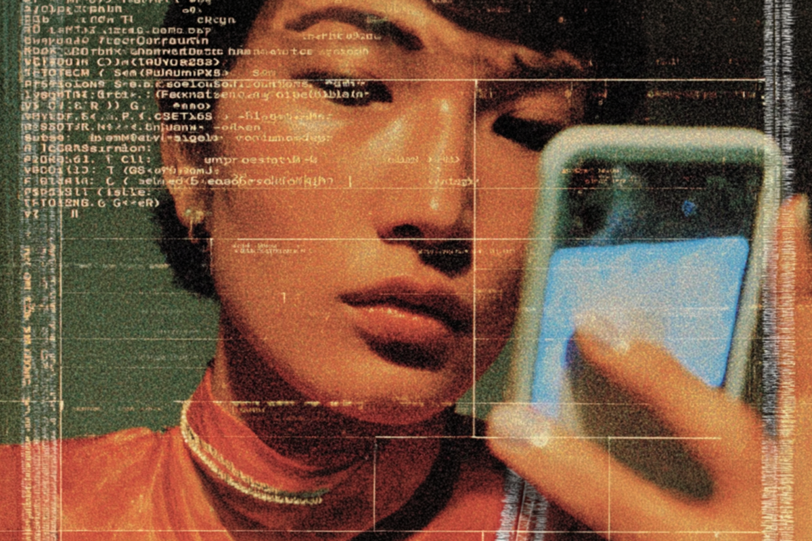

Biometría con IA: muy bueno para ser verdad
Cuando la identidad deja de ser garantía.
Cuando la identidad deja de ser garantía.

¿Te has preguntado qué pasaría hoy si llegan a robarte el teléfono? Probablemente tengas las apps importantes con clave, pero ¿qué pasaría si te digo que ahora la biometría es hackeable con IA?
Vamos un poco hacia atrás: es el año 2013 y Apple acaba de introducir la función de huella digital para desbloquear el iPhone. Fue muy revolucionario en su minuto, ¿cierto? Le siguieron cosas aún más increíbles. Reconocimiento facial y reconocimiento de voz para usar con Siri. La cosa no se quedó solo en las apps de Apple, ahora muchas aplicaciones que tienes en el teléfono pueden tener una capa extra de seguridad con biometría.
¿Cuál es el problema, entonces? Lo permanente de estos métodos. Una contraseña vulnerada se puede cambiar, pero la data biométrica se mantiene, amplificando los riesgos.
Todo partió con lo que se conoce como “deepfakes”. Son videos o audios creados con IA que imitan perfectamente la voz y el movimiento de una persona. Como con toda tecnología, el mal uso no tardó en llegar. En 2020, un actor robó US $35 millones usando IA para replicar la voz de su jefe y convencer a un ejecutivo bancario. En 2024, un empleado de la empresa británica Arup cayó en una estafa por US $25 millones, luego de tener una videollamada con el que parecía ser el CFO de su empresa.
Con la sofisticación que ha ido tomando la inteligencia artificial, lo lógico sería pensar que esto ha ido empeorando y no mejorando, porque los sistemas cada vez se hacen más profesionales y la gente cada vez es más experta.
Pero hay algo aún más inquietante que las historias virales: la normalización. La biometría se volvió invisible. Desbloqueas el teléfono sin pensar, autorizas transferencias con la cara, validas tu identidad con la voz cuando llamas al banco. Todo fluye y todo funciona. Hasta que deja de hacerlo, y no hay un “olvidé mi contraseña”.
La promesa de la biometría siempre fue eliminar la fricción. Que el cuerpo reemplazara al código y fuera rápido, simple. Pero en ese reemplazo también renunciamos a algo clave: la posibilidad de resetearnos. Porque si alguien logra clonar tu voz o reconstruir tu rostro con suficiente destreza, no hay botón de “cambiar cara” ni “actualizar huella”.
¿Qué se puede hacer? Los expertos recomiendan no confiar solamente en la biometría. Mantenerse alerta y usar seguridad por capas, por ejemplo, autenticación biométrica sumada a una contraseña o una app de autenticación con doble factor.
Para las empresas, señalan que es muy importante tener un sistema de seguridad que pueda detectar caras creadas con IA. Pero mientras eso no pase, ni tu banco ni tu compañía de internet te va a proteger.

Durante años, la tecnología avanzó para hacernos la vida más fácil. Menos claves, menos pasos, más practicidad. Funcionaba perfectamente hasta que se volvió tan buena que cuesta diferenciar qué es real. Hoy, esa misma comodidad nos empieza a jugar en contra, porque mientras más invisible es la seguridad, más fácil es olvidar que existe.
La biometría no es insegura, pero tampoco es infalible. Y en tiempos donde todo es IA, vale la pena protegerse un poco.
 Tecnología
TecnologíaSi eres como yo y revisas TikTok e Instagram constantemente, te habrás dado cuenta de que estas redes son casi como un experimento social.
 Tecnología
TecnologíaHablamos mucho de inteligencia artificial. La tenemos integrada en nuestra vida, nos ayuda en nuestros trabajos y le preguntamos cosas de…
 Tecnología
TecnologíaDurante años hemos pensado en la inteligencia artificial como algo súper frío: servidores gigantes, computadores procesando datos y…